📋 Общая информация
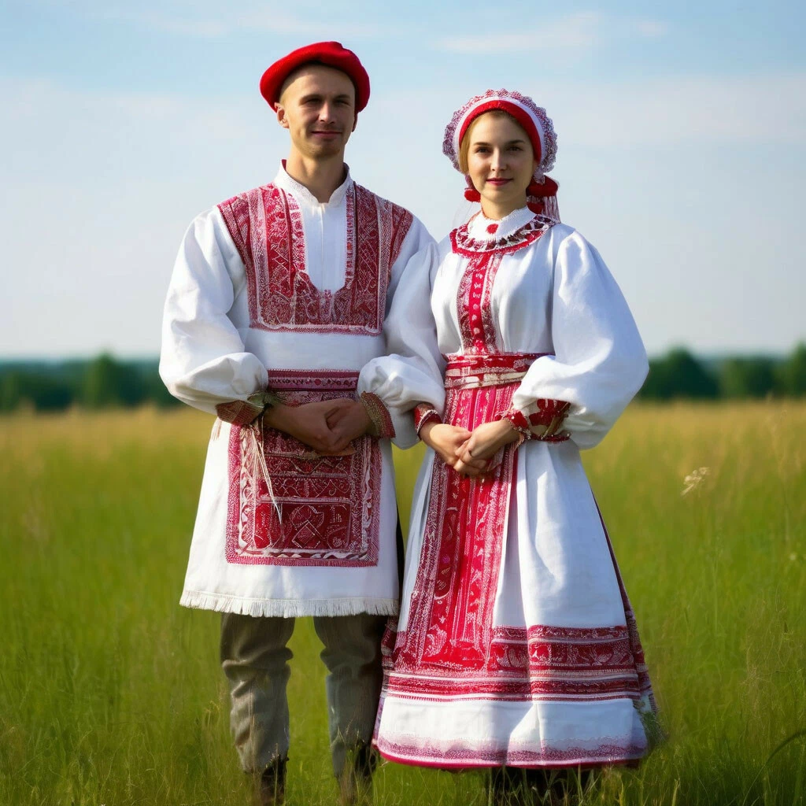
Численность
В России проживает около 800 тысяч белорусов. Общая численность в мире — около 10 миллионов человек. Белорусы составляют основное население Республики Беларусь.
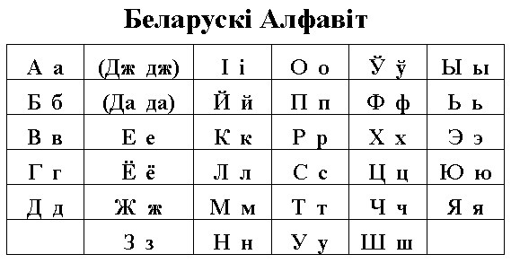
Язык
Белорусский язык относится к восточнославянской группе. Отличается мягкостью звучания, богатством диалектов и архаичными чертами, сохранившимися со времён Древней Руси.
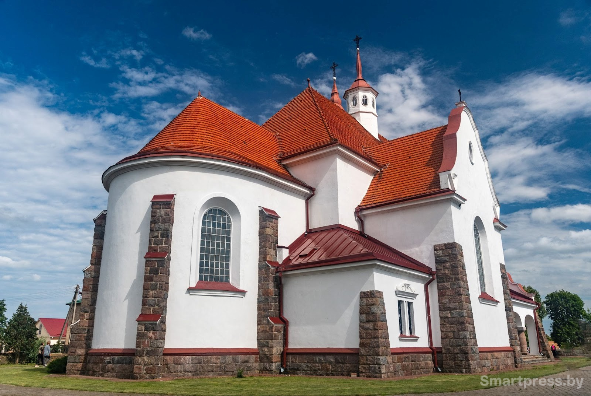
Религия
Основные религии — православное христианство и католицизм. Беларусь — одна из немногих стран, где православные и католики мирно сосуществуют веками.
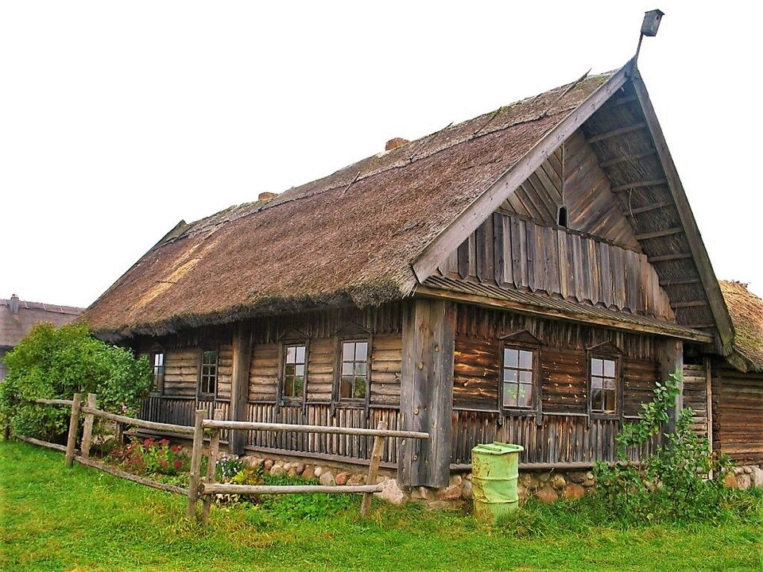
Расселение
Белорусы расселены по всей России, наибольшие диаспоры в Москве, Санкт-Петербурге и Сибири. За рубежом — в Польше, Украине, Латвии, США и Казахстане.
🎭 Традиции и культура
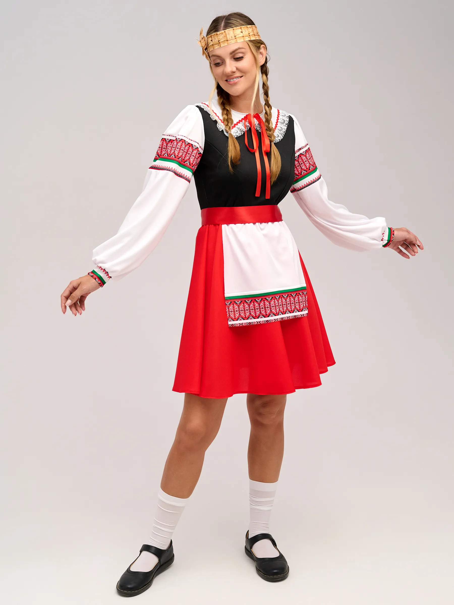
Национальный костюм
Белорусский костюм отличается белым цветом (отсюда название народа — «белорусы»). Женщины носили сорочки с красной вышивкой, фартуки, пояса с бахромой. Мужчины — белые рубахи и штаны.
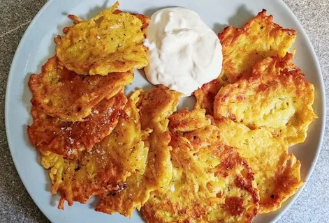
Кухня
Драники (картофельные оладьи) — визитная карточка белорусской кухни. Также известны: клёцки, колдуны, борщ, холодник, сало, домашняя колбаса. Картофелю здесь поклоняются как «второму хлебу».
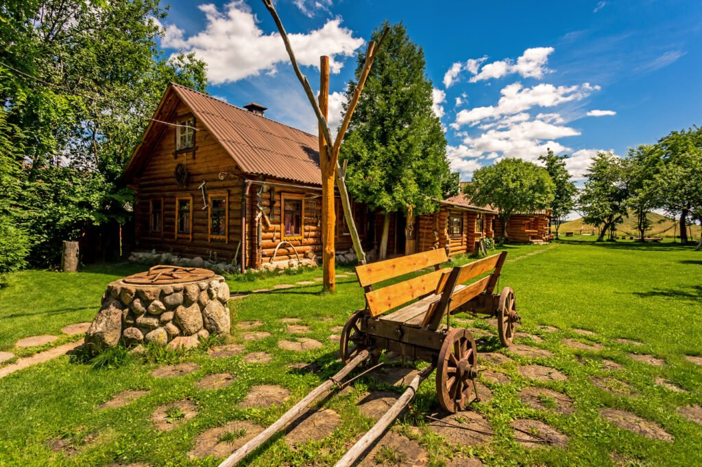
Архитектура
Традиционное жилище — сруб из брёвен с соломенной крышей. Обязательный элемент — плетень (плетёный забор из прутьев). Деревянные церкви и костёлы — гордость белорусской архитектуры.
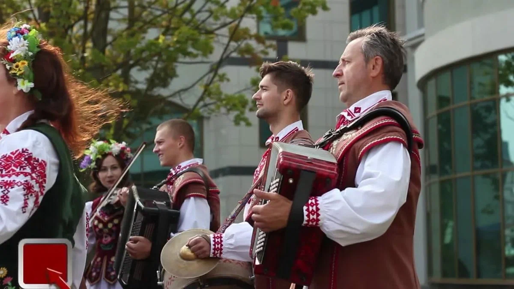
Музыка и танцы
Лявониха, карапет и юрочка — народные танцы. Цимбалы, дуда и цимбалы — традиционные инструменты. Хоровое пение и народные песни «каляды» — неотъемлемая часть культуры.
🎉 Народные праздники
-
Купалье (Иван Купала)
Самый любимый народный праздник. Прыжки через костёр, плетение венков из цветов и трав, гадания на суженого, поиск цветка папоротника.
-
Каляды (Рождество)
Колядки — обрядовые песни, которые исполняют группы людей («калядоўшчыкі»), ходя по домам. Щедрецы — богатые кутья на Святки.
-
Вялікдзень (Пасха)
Крашанкі (крашеные яйца) і пісанкі (писанки). Освящение кошиков с едой. Игра «битка яйцамі».
-
Гуканне вясны (Закликание весны)
Древний обряд встречи весны. Вынос куклы-солнцеворота, пение веснянок, символическое «прогонянне» зимы.
📸 Галерея
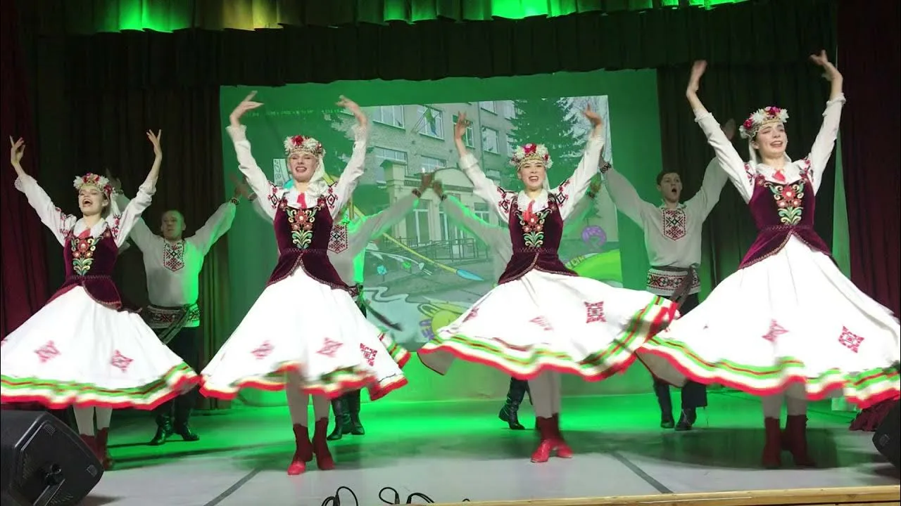
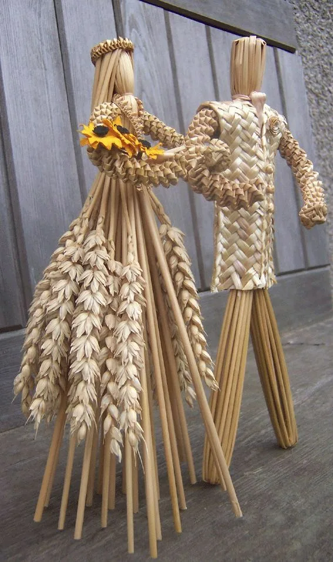
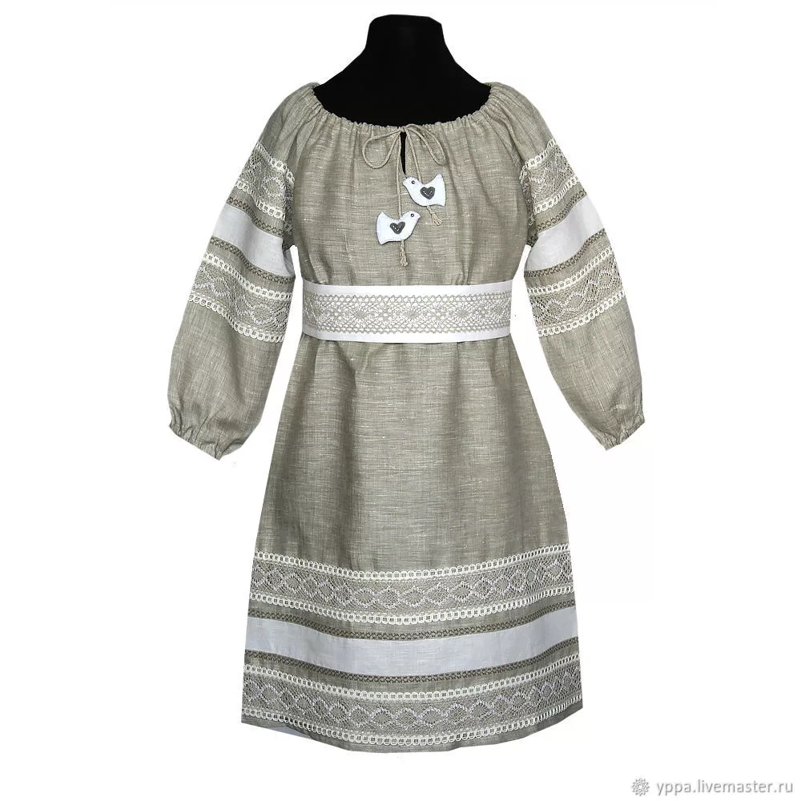
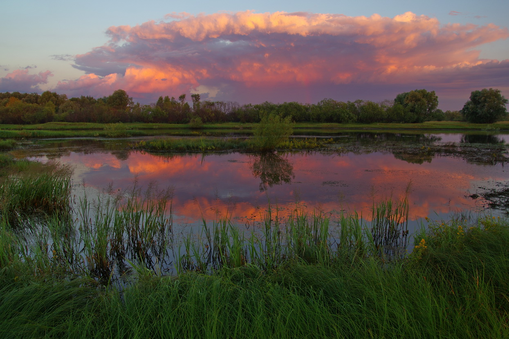
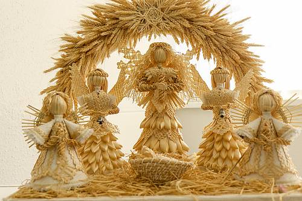
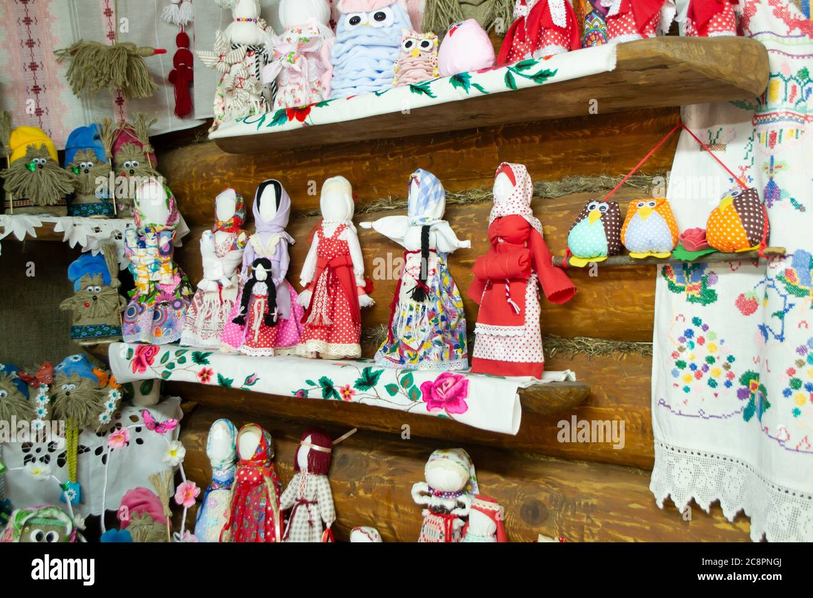

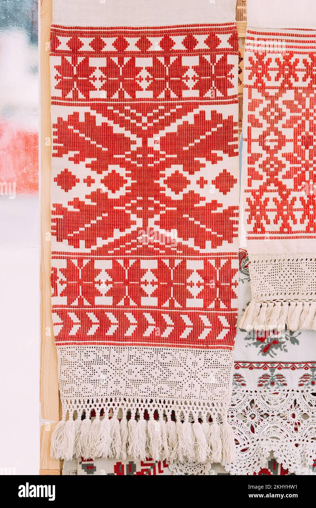
💡 Интересные факты
🏰 Замки
Беларусь называют «страной замков». Мирский и Несвижский замки включены в список ЮНЕСКО.
🌲 Полесье
Уникальный регион с древними лесами, болотами и своим диалектом «простым мовай» (простой мовой).
🥔 Картофель
Беларусь — родина современного картофеля в России. Здесь придумали более 200 блюд из картошки.
🎯 Викторина: Насколько хорошо вы знаете белорусскую культуру?
Ответьте на вопросы на основе информации с этой страницы.